A custom videgame's engine built from scratch with C++ and OpenGL.
Project information
- Category: OpenGL Project
- Project date: 01 Sept. 2022 - 01 June 2023
- Made by: Ramón Pérez Segarra.
Description
MintMojito Engine is a videogame engine made from scratch with C++ and OpenGL.
The engine is built component oriented using Entity Component System (ECS) and has different features such as custom and optimized lighting, a user friendly API and a lot of little tweaks made in order to ease the task of creating games with it.
This project is private because it is an academic project but I can show you code through a personal invitation to my repository.
Project features
- A user friendly API.
- Component oriented engine.
- Custom phong model lighting with directional, point and spot lights.
- Utilites for loading meshes, images and glsl shaders.
- Access to the low level graphics engine for fully customizable shaders and materials.
- Use of archtypes to facilitate working with the engine.
- 2D and 3D support.
- Shadow casting.
- Deferred rendering.
- A full game engine editor interface.
How it was made
Engine architecture
The main effort during the development of the engine was put into its architecture as I wanted to learn how a proper engine architecture would look like and also wanted an easy way of adding new features that didn't require major changes to the basic architecture of the engine.
In addition to this, I focused on having an API that is easy to understand and use for all potential users, accompanied by a set of basic usage guides to learn how to develop with the engine.
User friendly API
The engine has a very simple API to use, which employs code that is quite similar to Unity Engine, on which it is heavily based.
Here's an example of how to build a very basic scene with the main rendering loop and an entity with a mesh and a material:
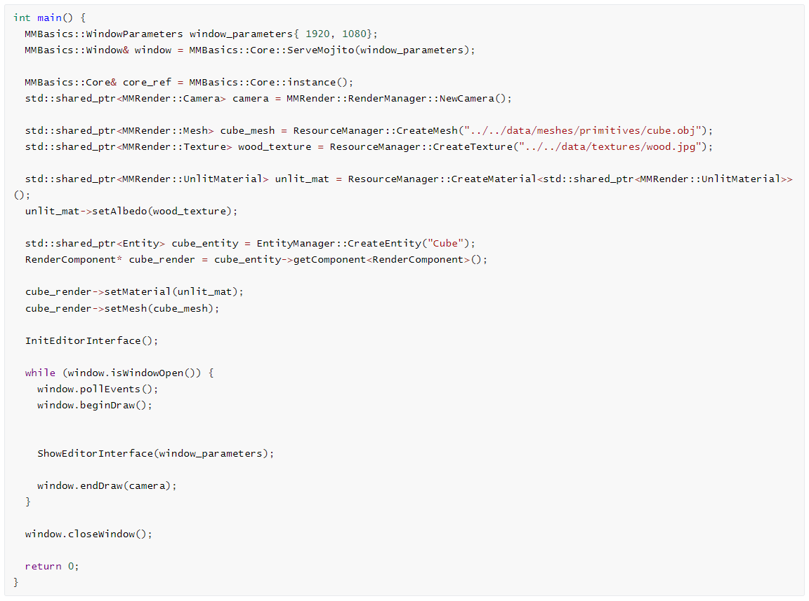
As seen in this image, each element is clearly distinguished, and the engine's tasks are divided into different classes (ResourceManager, RenderManager, EntityManager), all of which are straightforward to use. It also employs simple pointer management through smart pointers.
Entity Component System (ECS)
The engine is built using entities and components, leveraging the Entity Component System to facilitate the usage of different engine elements and distribute functionalities (rendering, camera, lights, transform) into different classes that compose an entity.
The system is based on the use of entities and components, where entities act as containers for components, providing a name and a means to identify those components.
User oriented class archtypes
The engine has archetype classes for different elements that users may frequently use. Currently, it includes archetypes for "Camera," "Light," and "Sprite." These archetypes are simply wrappers around entities but provide easy access to the most common components of those wrappers, such as camera, light, and rendering components.
The archetypes are not internally used within the engine to maintain coherence with the Entity Component System. Therefore, whenever the engine requires a specific component, it will directly utilize that component instead of working with archetypes. The archetypes are designed to simplify the workflow for users.
Generic and specialized materials
The engine implements a simple way to create your own shaders with GLSL and include them in the rendering pipeline through the creation of generic (or specialized) materials. These materials support multiple types of shaders using a data structure that stores Uniform information.
With the Material class you can define your own shaders and uniforms but the engine also allows to create a custom material that inherits from the base material in order to define custom behaviors and uniforms in an easier way by overriding functions of the base material that will work automatically in the rendering pipeline. The engine has some custom materiales created (Lit material, unlit material) that can be used as an example for new custom materials.
Rendering techniques and resources
The engine has been built using different rendering techniques and implements fully functional lighting, shadow casting, normal mapping and post-processing both in forward and deferred rendering.
Forward rendering
The basic rendering pipeline of the engine that executes the shaders for each geometry on the scene. This is a less efficient way of rendering multiple objects that need a lot of lighting calculation as every calculation will be made for each geometry in the scene.
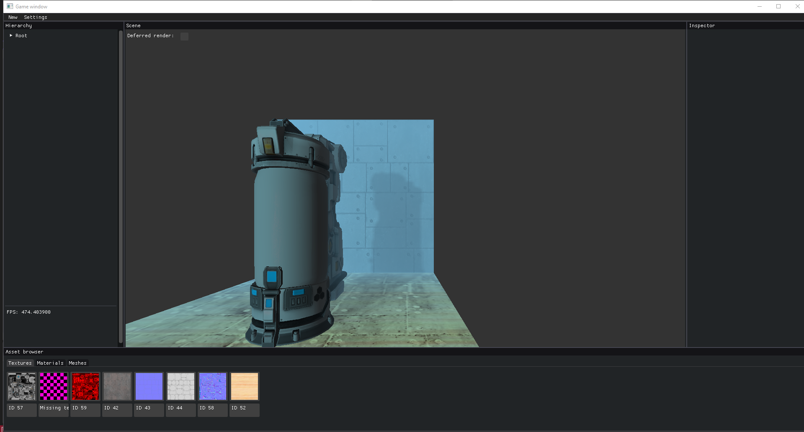An example of a scene with forward rendering.
Deferred rendering
Deferred is a more advanced way of rendering scenes by composing a final texture from different textures called g buffers that store the properties of every element in a scene.
This rendering technique is cheaper when working with large scenes that have a lot of lights involved in as the calculations for the lighting are only made once instead of the multiple times needed by the forward rendering pipeline.
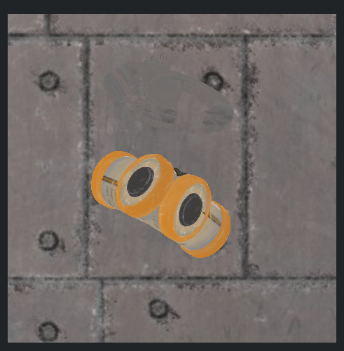 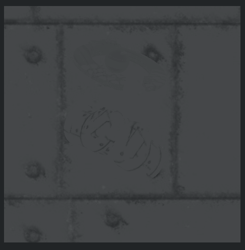 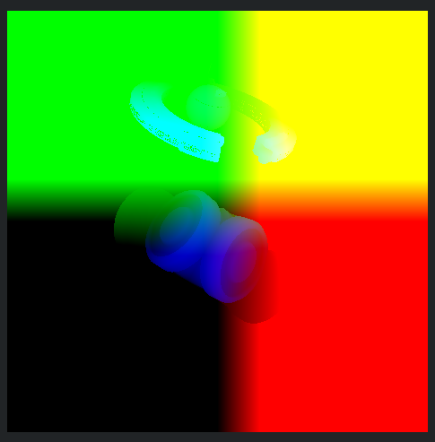 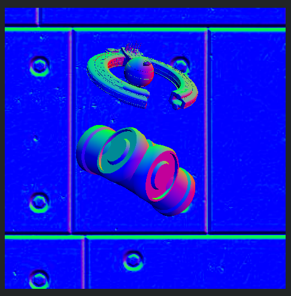 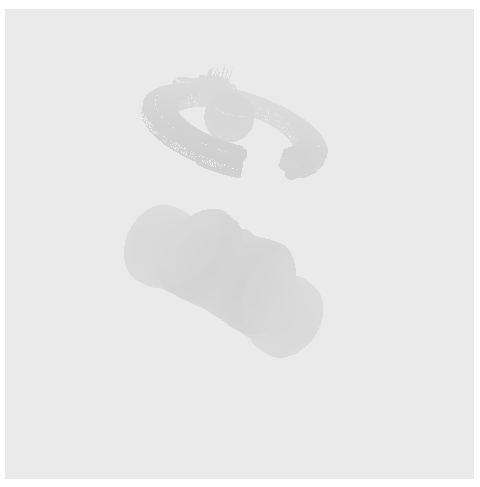 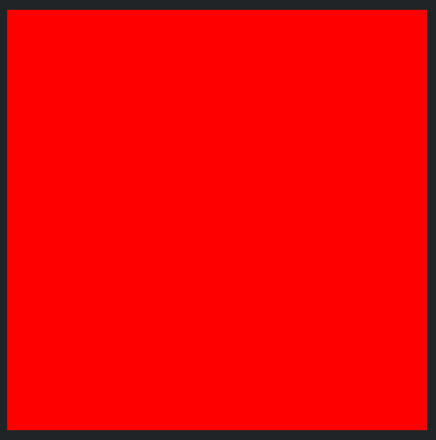An example of the different g buffers of a scene
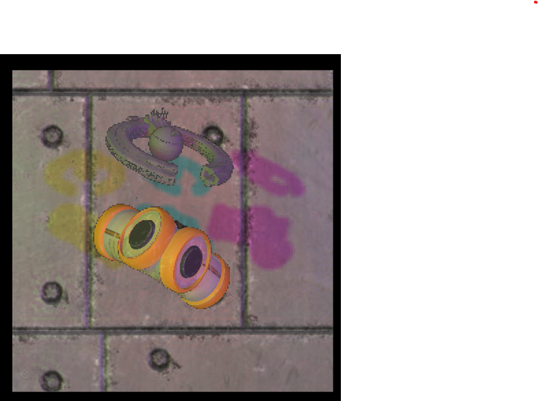The final result of the scene with 3 directional lights (red, green and blue).
Normal mapping
Another interesting feature of the engine is the use of normal maps for increasing the quality of simple geometries withput increasing the vertex count and its complexity.
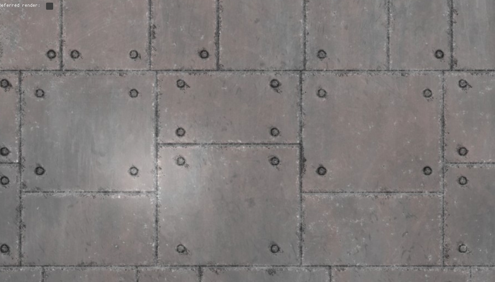 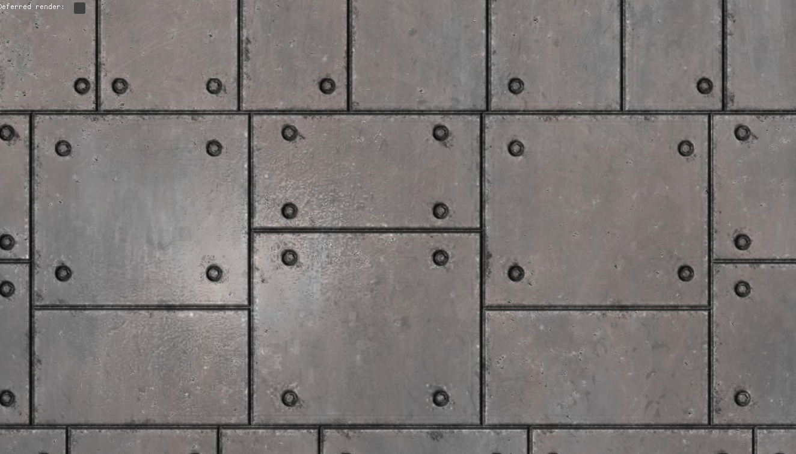Comparison of a quad with(right) and without(left) normal mapping.
Post-processing
The engine also implements an easy way of creating your custom post-processing effects by writing fragment shaders and adding them to the rendering pipeline through specific post-processing materials that are very easy to use.
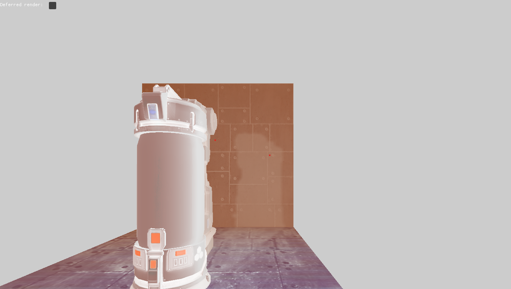An example of a simple post-processing effect that inverts the colors of the scene.